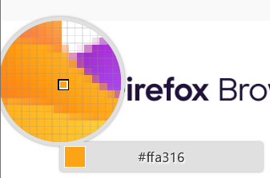

注意
※このサイトは非公式サイトです。
※このページはfirefoxでしか開けないようになっています。
※お問い合わせは「hurisan0909@gmail.com」までお問い合わせください。
※このサイトは個人が運営しています。
※スマートフォンで閲覧する場合無料サーバーを使用しているため広告が出ますのでご注意ください。
※なおこのサイトは収益を目的としたサイトではありません。
※English Page↓
click MEfirefoxユーザーの皆様ようこそ!
firefoxのまとめなど、非公式ながらまとめ。解説しているサイトです。ご自由に見てみてください。
firefoxを作っているモジラ社のサイト
ここを押すとmozila.comにアクセスできます。firefoxはmozila社が開発している。ブラウザで以外にもメール受信ソフトthunderbirdが有名である。
代表としてmozila社が作成しているがGooglechromeのような有名会社が作ってはいないが、ボランティア活動としてfirefoxが作られた。
Mozilla.org サイトのライセンス ポリシー
firefoxはコンテンツをクリエイティブ・コモンズライセンスを取得した。
mozilla.com「Mozilla.org Site Licensing Policies 」ライセンスポリシーmozilla社の製品一覧
firefox以外にもメールソフトや、firefoxの中でも開発者向けのブラウザなど、様々です。
mozilla.com「商標リスト」firefoxOS!?
すでにfirefoxOSは廃止になっていますが、スマホ業界に入った時がありました。
wiki「firefoxOS」タイトルの色はfirefoxのロゴの一部の色です。
下はプログラムの一部の画像
更新/2024年1月13日
このサイトは@freedomhuriが作成しています。
このサイトで間違いがあれば、以下の方法でご連絡ください
X(旧Twitter)G-mail(hurisan0909@gmail.com)
へ、送ってくださると非常に助かります。